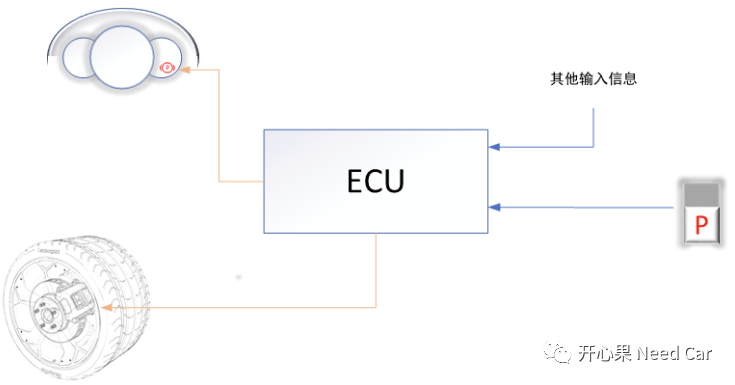
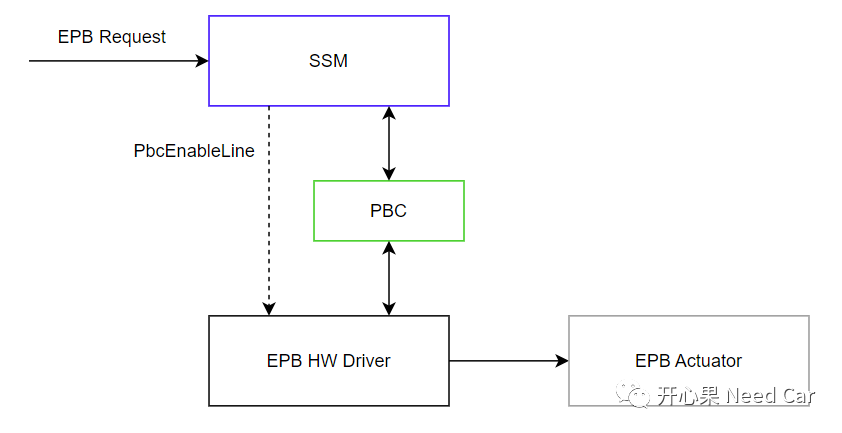
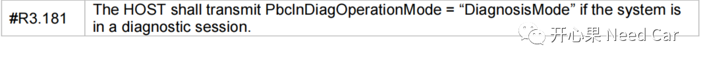

开心果 Need Car · 2023-11-07T07:26:00+08:00 · 微信原文
1、问题背景
描述问题之前，先同步一下EPB概念，EPB的术语：电子驻车制动。通俗讲就是制动系统，在这个系统中，有一个很重要的机械部件：卡钳。在ECU的控制下，车辆轮毂的夹紧、释放均由卡钳执行，EPB系统示意如下：

2、问题根因

SSM（standstill manager）主要负责车辆状态评估、将EPB请求转发PBC（parking brake controller），PBC进一步的将命令发送给EPB驱动，进而控制EPB的执行器。
在VDA（ Verband der Automobilindustrie）的规范中，对于诊断接口，有这样的需求，如下所示：

（一）供应商A的需求实现
当收到10 03诊断命令以后，PbcEnableLine禁止，即：EPB驱动不响应PBC的请求命令。同时，PBC忽略SSM的EPB命令请求。
（二）供应商B的需求实现
当收到10 03诊断命令以后，PbcEnableLine禁止，即：EPB驱动不响应PBC的请求命令。但是，PBC并不忽略SSM的EPB命令请求，命令依然发送给EPB HW Driver。因为EPB HW Driver被PbcEnableLine禁止响应PBC命令状态，造成EPB HW Driver无法在规定的时间内响应PBC的命令请求状态，进而造成响应超时，之后，PBC报EPB对应的故障，导致EPB功能失效。
就是这样一个需求，供应商A和供应商B产生了不同的需求解读，进而产生了不同的功能实现。
3、解决措施
面对这样的诊断问题，解决思路多种多样。eg：供应商B修改实现，避免误报EPB故障，OEM规范操作人员操作手顺（eg：确保退出10 03会话再执行EPB动作）等。
如果在项目初期，车辆没有铺开市场的前提下，让供应商修改最合适；如果考虑市场影响，此处，由OEM约束规范操作人员操作手顺避免问题可能更为合适。所以，遇到工程问题，需要具体问题具体分析，并不是说，软件修复就是最优方案。
往期精彩回顾
CAN FD通信：数据段错误，错误帧的速率是500Kbps还是2Mbps？